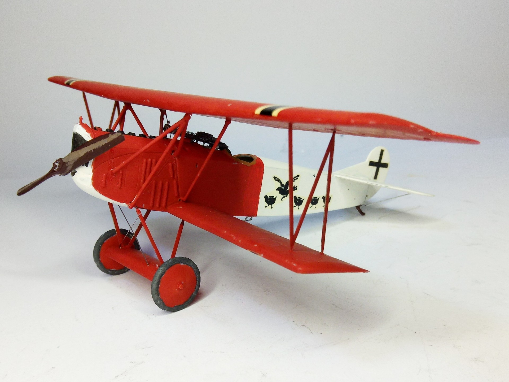
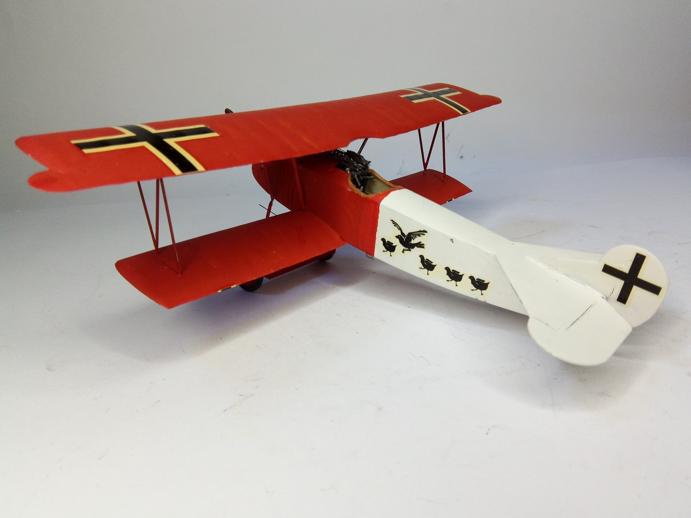

Aerei · scale model archive
Fokker DVII
Fokker DVII — Kit: New Ray. Lt. Günther von Büren , Jasta 18, Montingen September 1918…

Photo gallery

English description
Lt. Günther von Büren , Jasta 18, Montingen September 1918
https://www.facebook.com/photo/?fbid=945304484281153&set=a.459597029518570
#1/48 #NewRay #FokkerDVII
Descrizione italiana
Lt. Günther von Büren, Jasta 18, Montingen, settembre 1918. https://www.facebook.com/photo/?fbid=945304484281153&set=a.459597029518570